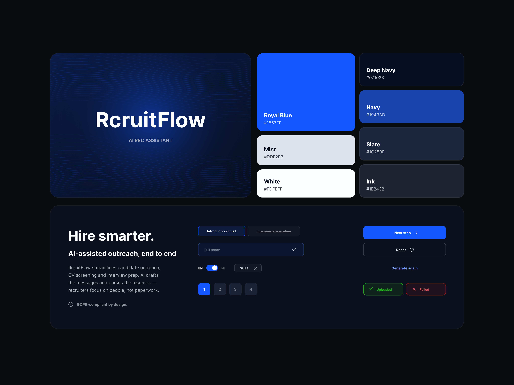

overview
Hiring, made legible at a glance.
RecruitFlow needed a product that could hold an entire hiring pipeline in one view without overwhelming the recruiter looking at it. I designed the platform from first wireframes to a production-ready system.
The work centred on density done well — surfacing the right data at the right moment across boards, candidate profiles, and team views.
role & scope
b2b saas · remote- role
- Product Designer
- team
- Founder, 3 engineers
- year
- 2025
- scope
- UX · UI · design system · prototypes
- tools
- Figma, Figma Variables, Maze
- platform
- Responsive web app
- Designed the full application — boards, profiles, scheduling, analytics.
- Built a dense-but-calm component library for data-heavy surfaces.
- Ran prototype tests with recruiters to validate the core pipeline flow.
challenge
Density without the noise.
Recruiters live inside their tool all day. Early concepts crammed every metric on screen and became exhausting to scan.
The challenge was a clear visual hierarchy that let a recruiter move from a 200-candidate overview to a single profile and back without losing their place.
process
Discovery
Interviewed recruiters and mapped the real-world hiring pipeline stage by stage.
Architecture
Defined the board model, candidate object, and how views relate to each other.
Patterns
Designed reusable table, card, and panel patterns tuned for high data density.
Validate
Prototyped and tested the pipeline flow, iterating on stage transitions.
ux structure
The product is organised around the pipeline as the home base — every other surface is a focused detour that returns the recruiter to the board.
- Kanban-style pipeline as the default landing view.
- Slide-over candidate panel keeps context without a full page change.
- Global command bar for jumping to any candidate or role.
final screens
design system
A system tuned for data — logo, color palette, status colors and reusable components, with a tight type ramp and table patterns that stay readable at high row counts.

responsive / platform
The app scales from a recruiter on a wide monitor to a hiring manager checking a profile on mobile. Tables collapse into cards, and the slide-over becomes a full-screen sheet.
launch assets / extras
Supporting work: empty states, onboarding flows, and a marketing one-pager to introduce the product to early customers.
outcome
RecruitFlow launched with a coherent, dense interface recruiters could trust, backed by a component library the team extends for every new module.